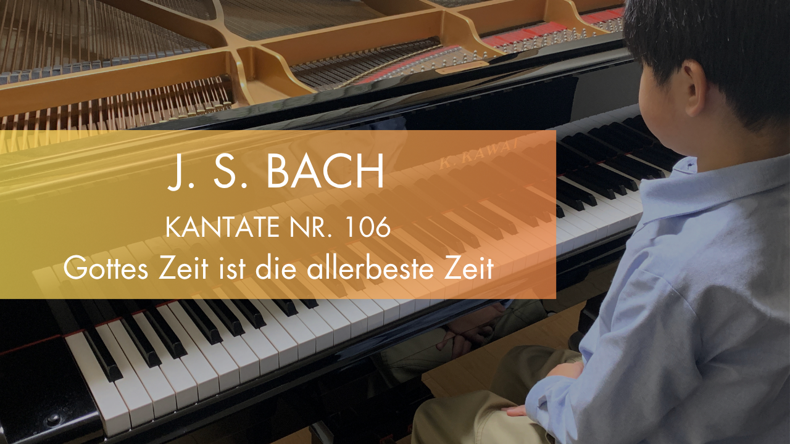
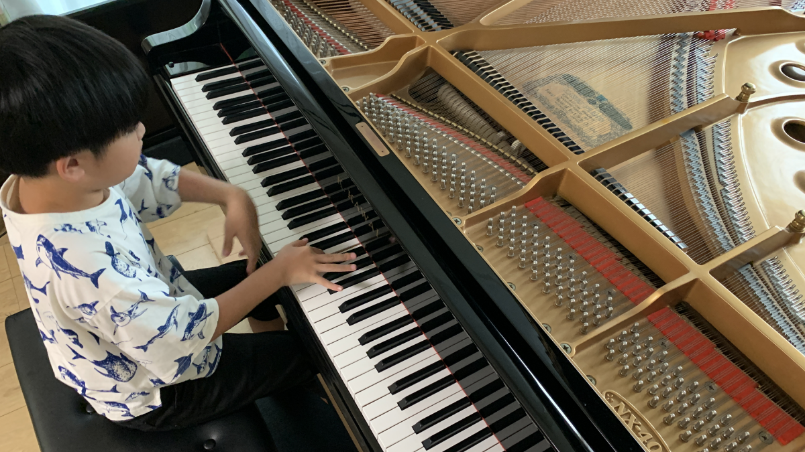
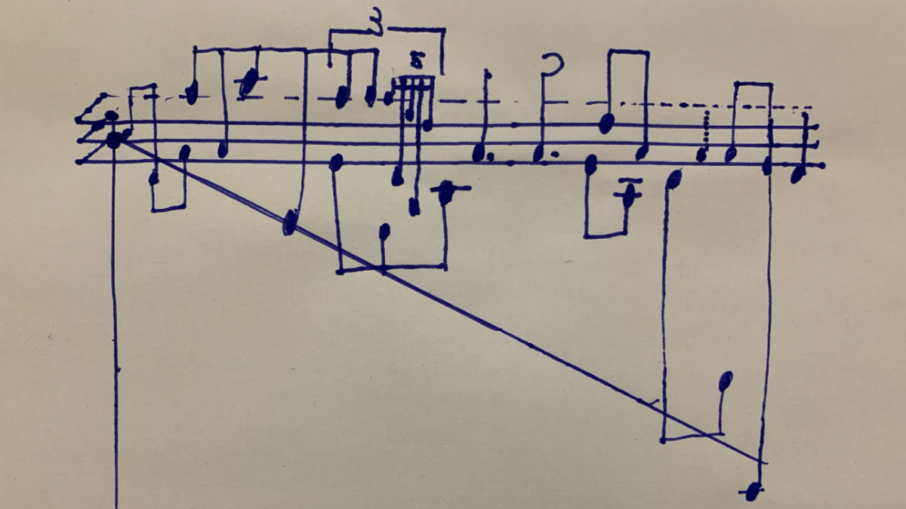

Special Note
This website serves as a portfolio documenting Reiji’s self-directed inquiries in areas such as music theory, tuning systems, mathematical structures, and spatial reasoning.
All content originates from Reiji’s own observations, verbal reflections, and outputs created either by hand or using various tools. These have been contextualized and organized by a guardian with the support of AI technologies. The primary goal is to systematically and faithfully present his cognitive processes and creative approaches.
Each page has been reviewed and approved by Reiji himself, and is published based on his own intent and consent.
While AI interpretation is used in a supportive capacity, final editorial decisions and responsibility for content curation rest entirely with the guardian.
Each entry is composed of the following elements:
- Title and Overview: Generated through AI-assisted interpretation of Reiji’s notes and verbal commentary, then summarized and edited by the guardian.
- Reiji's Observations: English translations of Reiji’s original spoken explanations in Japanese, transcribed with close attention to preserving semantic accuracy.
- Handwritten Notes and Diagrams: Digitized images of Reiji’s handwritten materials.
- Musical Scores: Notated by Reiji using MuseScore Studio 4.5.2, reflecting his own compositional and tuning choices.
- Summary Tables: Structured representations of Reiji’s output, compiled by the guardian for clarity and accessibility.
- AI Assistant’s Notes and Inferences: Analytical interpretations generated by AI based on Reiji’s verbal and visual output, used especially in cases where the original content involves advanced or abstract concepts.
This portfolio is not the result of externally assigned or directed work. Rather, it is a record of intrinsically motivated inquiry, made accessible through supportive editorial efforts while preserving the originality and autonomy of Reiji’s thinking.
Pick Up
These featured entries provide intuitive gateways into the portfolio. At times, the structure and sound embedded in the work may convey its meaning more directly than verbal interpretation.
-
 July 28, 2025
Dynamic Harmony and Lissajous Curves — Visualizing Relationships Between Equal Temperaments
This work presents a system that dynamically links sound and visuals using Lissajous curves. The parametric function \((\sin At, \cos Bt)\) is used, where A is fixed at 1, and B is defined as \(B = \sqrt[a]{\pi}^n\). This construction allows the...
July 28, 2025
Dynamic Harmony and Lissajous Curves — Visualizing Relationships Between Equal Temperaments
This work presents a system that dynamically links sound and visuals using Lissajous curves. The parametric function \((\sin At, \cos Bt)\) is used, where A is fixed at 1, and B is defined as \(B = \sqrt[a]{\pi}^n\). This construction allows the...
-  July 21, 2025 Performance Record of J.S. Bach – Gottes Zeit ist die allerbeste Zeit, BWV 106 (Self-arranged Piano Solo) This is a performance record of J.S. Bach’s “Gottes Zeit ist die allerbeste Zeit” (Sonatina from BWV 106), arranged as a piano solo and recorded in June 2025 by Reiji at age 9. The arrangement is based on the 1768 manuscript...
- May 25, 2025 Wave Decay and Considerations Through Limits This record explores the phenomenon of wave decay from a mathematical perspective. While watching ripples in a bathtub, Reiji began pondering: “What happens to a wave as time approaches infinity?” From this question, he analyzed...
-
 May 13, 2025
Designing a Custom Scale Incorporating φ³ and 125/32
This document presents an experimental tuning system that incorporates both the irrational ratio φ³ (the cube of the golden ratio) and the just intonation ratio 125/32, which corresponds to a pure major third. Drawing inspiration from the...
May 13, 2025
Designing a Custom Scale Incorporating φ³ and 125/32
This document presents an experimental tuning system that incorporates both the irrational ratio φ³ (the cube of the golden ratio) and the just intonation ratio 125/32, which corresponds to a pure major third. Drawing inspiration from the...
- May 12, 2025 Translating Birdsong into Music: Temperament and Structural Choices This composition explores the transformation of natural birdsong into music using the 24-tone equal temperament (24-TET) system. While Pythagorean or meantone temperaments face challenges in modulating to such irregular...
- May 8, 2025 Spatial Mapping of Just Intonation in Overtone Dimensions This record explores a geometric approach to understanding pitch relationships in just intonation. It visualizes three overtone series—3rd (perfect fifths), 5th (major thirds), and 11th (undecimal intervals)—as spatial axes, representing...
Categories
These categories reflect different facets of an ongoing exploration. Each one frames a way of listening, observing, or thinking—sometimes precise, sometimes intuitive.
-
Tuning and Structural Exploration
Temperaments, tunings, notations, and ratios an attempt to touch the underlying architecture of sound through number and space. Between just intonation and equal temperament, new resonances are formed.
-

Performance and Interpretation
Performed music reinterpreted through harmonics, progressions, and form. Hearing the structure of the world within Bach’s compositions.
-
Mathematical and Physical Intuition
Limits, decay, waves, angles, and functions exploring the behavior of sound and presence as revealed through mathematics.
-

Composition and Microtonality
Soundscapes woven from natural voices and irregular intervals. A record of creative work at the boundary between dissonance and harmony.
-
Conceptual and Spatial Inquiry
Infinity, zero, circles, dimensions a thought experiment beginning with arctangent, leading to a space named “Vita.” An attempt to sketch invisible structures in perceptible form.
-
Apps and Experimental Tools
Testing tuning by ear, visualizing structure. Self-built tools and environments as extensions of sonic exploration.
Profile
Reiji
Reiji was born in 2016 and is currently a fourth-grade elementary school student.
Since 2023, he has been deeply drawn to the interconnected worlds of music and mathematics, and has pursued both through self-directed study.
In 2024, he began studying piano under the guidance of pianist Ichiro Higuchi.
His explorations span tuning systems, resonance, mathematical structures, and the perceptual dimensions of sound.